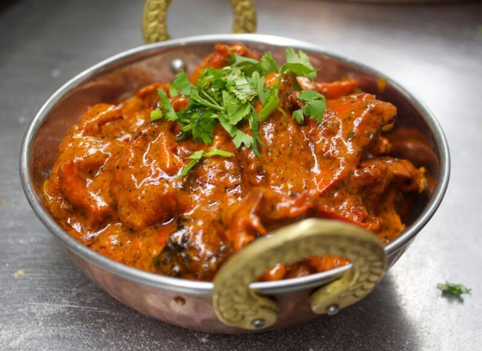
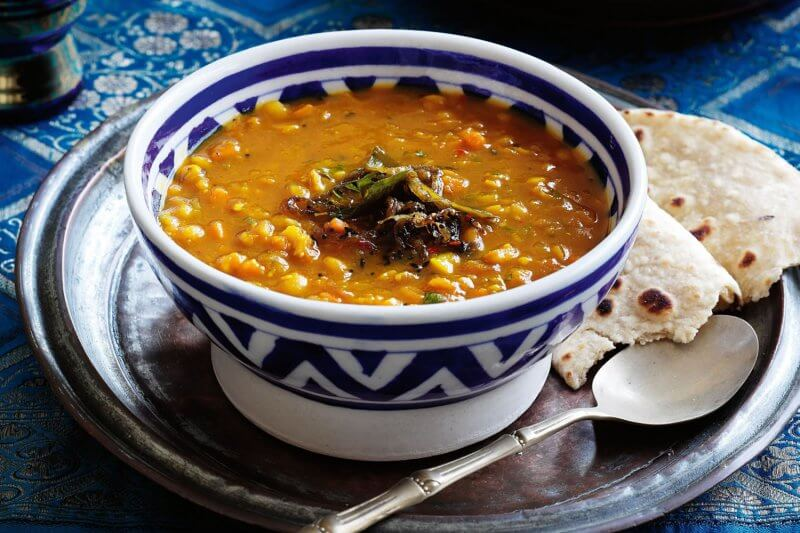
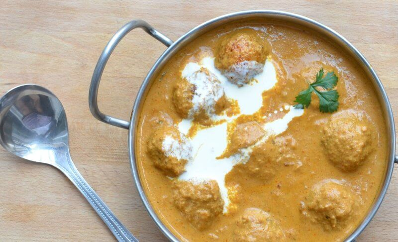
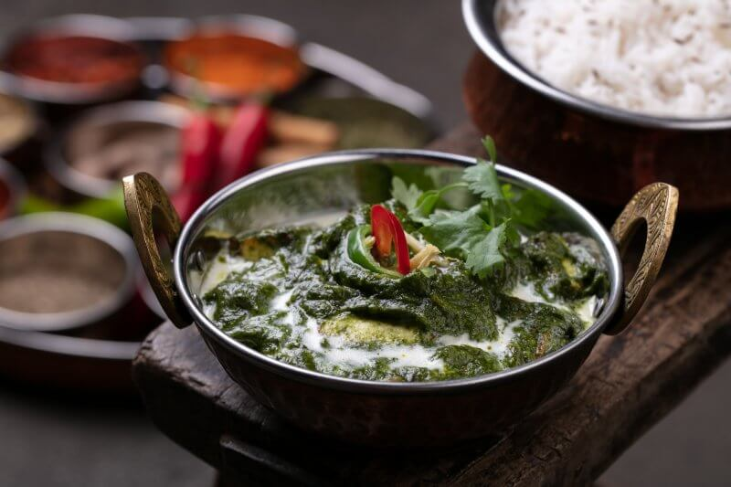
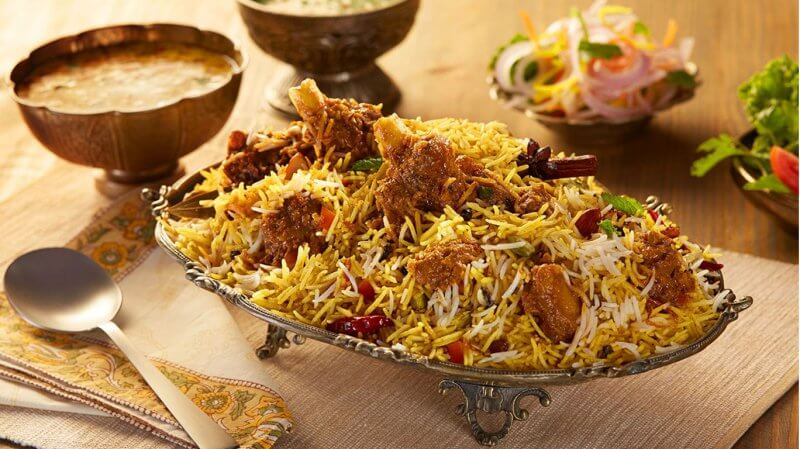
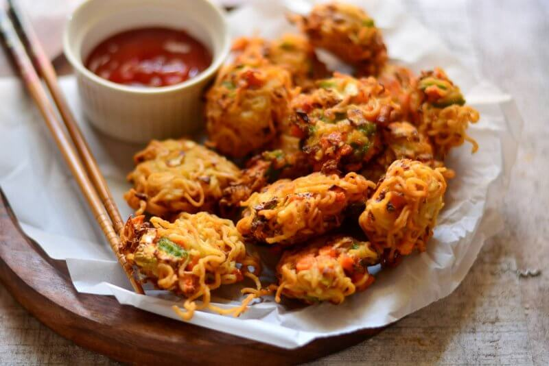
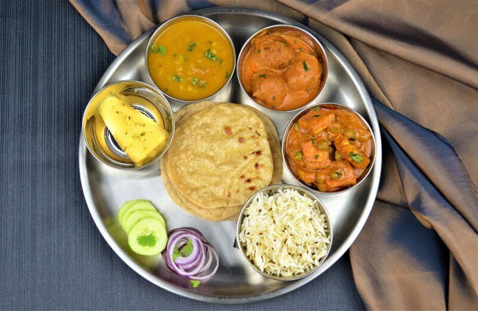
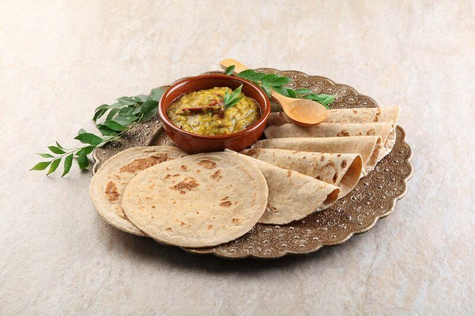
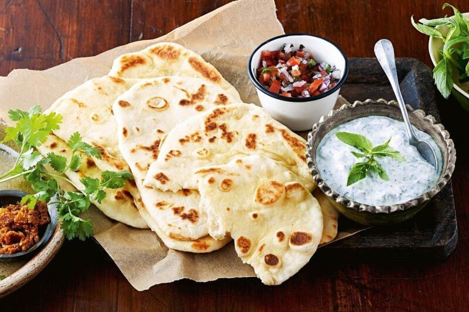

____
Традиционная еда
Карри — Есть документальное подтверждение, что карри – индийское блюдо впервые приготовили несколько тысяч лет назад. Это название не только популярной приправы, но и национального блюда. Готовят его из бобовых, овощей, иногда добавляют мясо и, конечно, целого букета специй. В готовом угощении может быть до двух десятков приправ. Готовое блюдо подают с рисом.

Суп дал — Типичный пример сочетания овощей, бобовых (гороха), риса, карри в одном индийском блюде – дал. Суп является обязательным для индийского обеда, в состав входят бобовые или горох, кушают с рисом, хлебной лепешкой.

Малай-кофта — Еще одно известное национальное индийское блюдо – обжаренные небольшие шарики из картофеля и сыра панир. Также добавляют зелень, пряности, орехи.
Название означает – фрикадельки (кофта) в соус-креме (малай).

Палак Панир — В список самых известных блюд индийской кухни входит суп из шпината и сыра, также добавляют пряности и овощей. Собственно, в переводе палак значит шпинат, а панир – сорт мягкого сыра, похожего на адыгейский. Индийское блюдо нежное, с приятным сливочным вкусом. Подают с рисом, хлебными лепешками.

Бириани — Название происходит от персидского слова, которое означает жаренный. Готовят его по такой технологии – рис басмати обжаривают с добавлением масла гхи, овощей, приправ.

Пакора — Название индийского уличного блюда объединяет овощи, сыр и мясо, обжаренные в кляре.

Тхали (тали) — В переводе название индийского блюда тали значит поднос с угощениями. На самом деле так и есть – на большое блюдо ставят небольшие тарелочки с различными блюдами. Изначально его серверовали на банановом листе, к слову, в некоторых регионах его и сегодня подают вот так – по старинке.

Чапати — Пожалуй, самая известная в Индии хлебная лепешка – чапати. Готовится блюдо очень быстро, поскольку требует минимум продуктов – мука из цельного зерна. В индийском блюде используется специальная мука – атта. Лепешки пекут на сухой сковородке, без добавления масла. Таким образом, лепешки отлично подходят для тех, кто не хочет набрать лишние калории.

Нааны — Одно из самых любимых блюд в Индии – лепешки нааны. В обычное дрожжевое тесто добавляют йогурт, растительное масла. Лепешки, выпекают в индийской печи тандури.

____